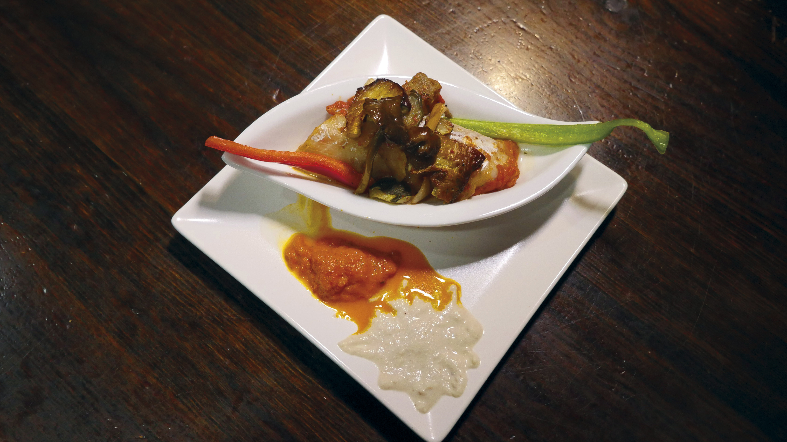

MasterPintxo es un concurso de pintxos que tiene lugar en ourense en el que los establecimientos pueden participar elaborando unos pinchos. Estos pinchos seran valorados tanto por un jurado popular como por un jurado profesional.
El 28 de abril de 1789 tuvo lugar un motín a bordo del navío HMS Bounty de la Marina Real Británica en medio del océano Pacífico. Tripulantes insatisfechos liderados por el ayudante de maestre Fletcher Christian tomaron el control de la embarcación de manos de su capitán, el teniente William Bligh, a quien dejaron a la deriva a bordo de un bote con pocas provisiones junto con otros dieciocho marineros leales. Los amotinados se establecieron en Tahití o en las islas Pitcairn; mientras que Bligh consiguió realizar un viaje de más de 6500 km hasta encontrar tierra, comenzando entonces un proceso para llevar a los amotinados ante la justicia. El Bounty había dejado Gran Bretaña en 1787 para recoger y transportar árboles del pan desde Tahití hasta las Indias Occidentales. La disciplina entre los hombres se deterioró tras cinco meses de descanso pasados en Tahití, periodo en el que muchos marineros vivieron en tierra y entablaron relaciones con mujeres nativas. La relación de Bligh con su tripulación fue empeorando a medida que este imponía castigos cada vez más severos y aumentaba sus críticas y abusos, teniendo a Christian como blanco frecuente. Este terminó por realizar con éxito un motín contra el capitán unas tres semanas después de que el navío hubiera dejado Tahití.
Lista de pinchos concursantes

Barqueta A Despensa
Barqueta de bacallau en pisto de cogomelos con puré de boletos.